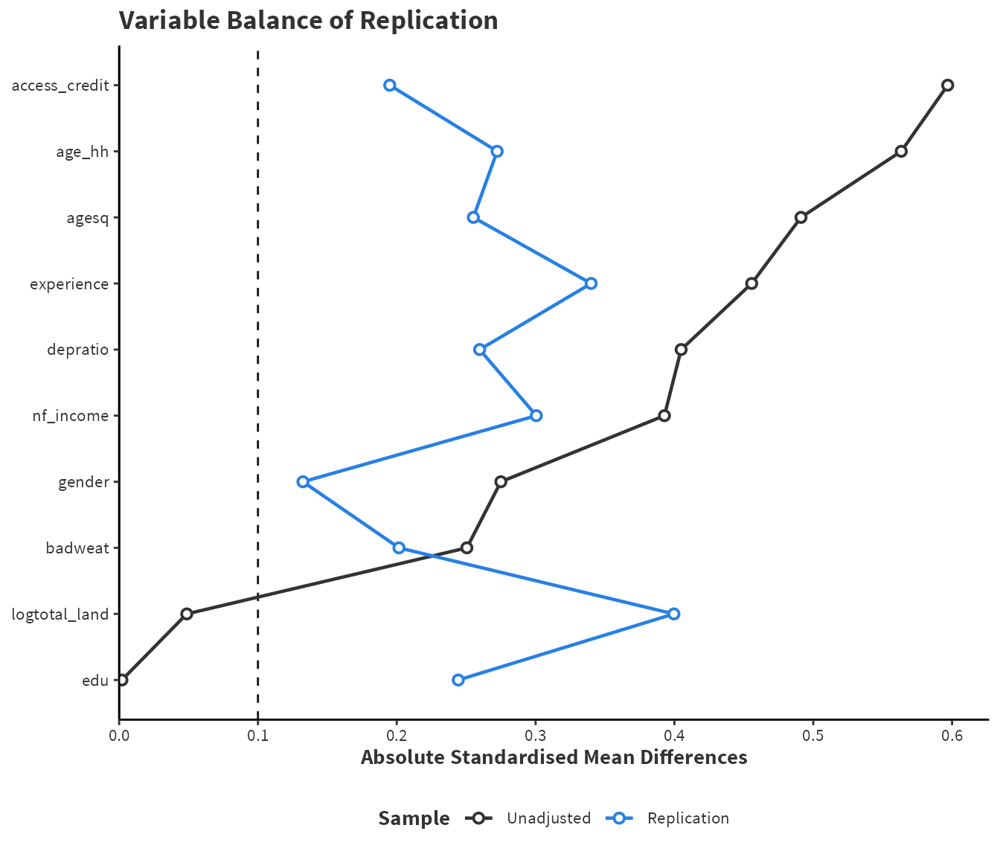
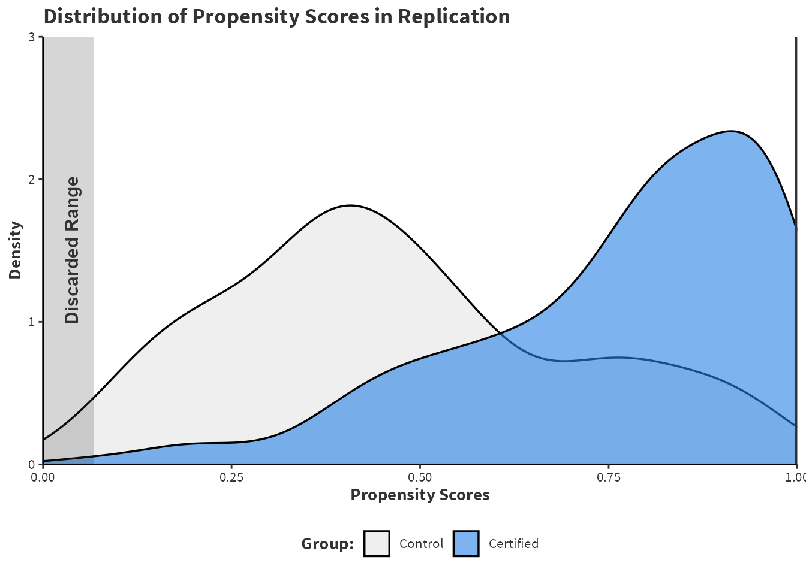
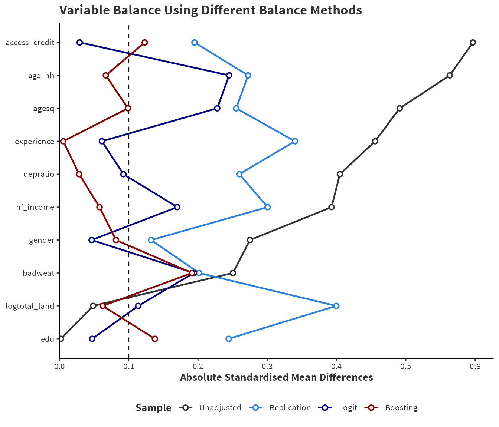

| Variable | Description |
|---|---|
| Certification (Treatment/ Control) | If the farming household is certified (=1) or otherwise (=0) |
| Household Age | Age of the head of the household in years |
| Squared Household Age | Age of the head of the household squared |
| Gender | Gender of the head of household (male = 1 and female = 0) |
| Dependency Ratio | Household members below 14 and above 65 years divided by rest of the household member |
| Education Level | Education of the head of household in years |
| Years of Coffee Production | Years of experience in coffee farming |
| Log Total Land | Logarithm of total land size in hectares |
| Access to Credit | Household has access to credit (yes = 1, otherwise = 0) |
| Bad Weather | If the household was affected by floods/droughts during the last year (2008–2009) |
| Non-farm Income Access | If the household has access to nonfarm income |
4 Replication Case Study
The replication study focuses on a paper titled “The Impact of Coffee Certification on Small-Scale Producers’ Livelihoods: A Case Study from the Jimma Zone, Ethiopia,” published in Agricultural Economics (2012) by Pradyot Ranjan Jena, Bezawit Beyene Chichaibelu, Till Stellmacher, and Ulrike Grote. This paper explores the effects of coffee certification schemes on the economic wellbeing of small-scale coffee farmers in Ethiopia, particularly examining whether these schemes contribute to poverty reduction and improved livelihoods among smallholders.
The central theme of the paper is the evaluation of certification schemes, such as Fairtrade and organic certification, as tools for enhancing the income stability and economic resilience of small-scale coffee producers. Certification is seen as a potential tool for economic growth and and environmental sustainability and so it is important to understand the impact on small-scale farmers. Table 4.1 summarises the variables used in the propensity score model.
(Jana2012?) define livelihood as a combination of per capita income, total income, per capita consumption and yield per hectare. For simplicity, this replication will only use per capita income as a dependent variable. This measure is selected as per capita income best quantifies the individual income which most strongly impacts overall livelihood (see cite?).
Randomisation into certified and uncertified is not possible and it is likely that farmers who seek certification are different than farmers who don’t. Thus, there is selection bias leading to structural differences between groups so a contrast in means between the certified (treated) and uncertified (control) farmers would be biased. Propensity scores are used to create covariate balance and reduce bias of the estimated treatment effect. The paper did not assess the balance of covariates. However, this provides a good opportunity to assess covariate balance in the initial paper and the repeat the analysis using a machine learning propensity model.
4.0.1 Replication of Original Results
Jena et al. (2012) provides a replication package including Stata code that uses Stata’s psmatch2 package to perform nearest neighbour matching with replacement and common support trimming. Common support trimming means that any observations outside the commonly overlapping are are discarded. The results of the paper are be fully replicated using the MatchIt package inside R.
Show Code to Replicate Results of @Jena2012
coffee_formula <- as.formula(certified ~ age_hh +
agesq + nonfarmincome_access + depratio +
logtotal_land + badweat + edu + gender +
years_cofeproduction + access_credit)
library(MatchIt)
library(marginaleffects)
coffee_rep_pmodel <- matchit(coffee_formula, data=coffee_data, distance="glm",
method="nearest", replace = T, estimand="ATT",
discard="both")
coffee_logit_md <- match.data(coffee_rep_pmodel)
coffee_rep_fit<- lm(percapitaincome_day_maleeq ~ certified,
data = coffee_logit_md, weights=weights)
replicated_result <- avg_comparisons(coffee_rep_fit, variables = "certified",
vcov = TRUE,
newdata = subset(coffee_logit_md, certified == 1),
wts = "weights")Show to Code to Make Figure #
replicated_result_tbl <- extract_comparison_results(replicated_result)
rownames(replicated_result_tbl) <- "Replicated Result"
kbl(replicated_result_tbl, digits=2,booktabs= T, align = "c",
font_size=10) %>%
kable_styling(full_width = T)| Estimate | SE | P.Value | Lower.CI | Upper.CI | |
|---|---|---|---|---|---|
| Replicated Result | -0.15 | 0.74 | 0.84 | -1.6 | 1.29 |
Table 4.2 shows the replicated result obtained by Jena et al. (2012). The intriguing finding of the paper is that the average treatment effect on the treated (ATT) is negative. That is, of the farmers that become certified, their per capita income is expected to decrease by \(\$0.15\) per day. Intuition and proponents of certification schemes suggest that certification leads to an increase of income. If certification negatively impacts income, it would call into question a significant effort to engage in certification and fair trade practices.
Jena et al. (2012) does not perform any discussion or consideration of balance in their paper and so it is unclear if propensity score matching results in covariate balance. The cobalt package creates balance tables using bal.tab() and a visualisation using love.plot().
Show the Code to Create Table #
library(cobalt)
coffee_rep_btab <- bal.tab(coffee_rep_pmodel,
data = coffee_data,
stats = c("mean.diffs","variance.ratios"),
binary = "std", continuous = "std",
thresholds = c(mean.diffs = 0.1),
s.d.denom = "treated")
coffee_rep_btab_ss <- coffee_rep_btab$Observations
coffee_rep_btab <- coffee_rep_btab$Balance[-1,-c(2,3)]
rowlabels <- c(
"Household Age", "Squared Household Age", "Non-farm Income Access",
"Log Total Land", "Dependency Ratio", "Bad Weather",
"Education Level", "Gender", "Years of Coffee Production",
"Access to Credit")
colnames <- c("Variable","Type", "SMD", "Balance Threshold", "Variance Ratio")
rownames(coffee_rep_btab) <- rowlabels
coffee_rep_btab[,3] <- ifelse(
coffee_rep_btab[,3] >= "Not Balanced, >0.1", "No", "Yes")
kbl(coffee_rep_btab, digits=3, booktabs=TRUE, align="c",
font_size=10, col.names=colnames) %>%
kable_styling(full_width=TRUE)| Variable | Type | SMD | Balance Threshold | Variance Ratio |
|---|---|---|---|---|
| Household Age | Contin. | -0.272 | No | 1.073 |
| Squared Household Age | Contin. | -0.255 | No | 1.143 |
| Non-farm Income Access | Binary | 0.301 | No | NA |
| Log Total Land | Contin. | 0.260 | No | 1.297 |
| Dependency Ratio | Contin. | -0.400 | No | 0.979 |
| Bad Weather | Binary | 0.202 | No | NA |
| Education Level | Contin. | 0.244 | No | 1.034 |
| Gender | Binary | -0.132 | No | NA |
| Years of Coffee Production | Contin. | -0.340 | No | 0.911 |
| Access to Credit | Binary | 0.195 | No | NA |
Show the Code to Create Figure #
# add render info for showtext to yaml. also chang legend to be more informative.
library(ggplot2)
love.plot(coffee_formula,
data = coffee_data,
weights = list(Replication = coffee_rep_pmodel),
var.order = "unadjusted", binary = "std",
abs = TRUE, colors = c("#333333", "#2780e3"),
shapes = c("circle", "square"),
line = TRUE, thresholds=0.1, s.d.denom="treated") +
labs(title = "Variable Balance",
x = "Absolute Standardised Mean Differences",
fill="Method") +
custom_ggplot_theme +
scale_x_continuous(breaks = seq(0,0.6,length.out=7),
expand = expansion(c(0, 0.05)))

Table 4.3 and Figure 4.1 show that propensity score matching has obtained very poor balance. Based on the \(10\%\) rule discussed in (sec?)-, not a single variable is balanced and so the estimate of the treatment effect is likely to be biased by structural differences between control and certified.
Four key variables: age, gender, education, and access to credit all exhibit poor balance. These variables are strong confounders in theory and so emphasising balance in these variables is critical to making a robust causal inference. Perhaps there is gender or age discrimination in the certification process. Perhaps, those with lesser education may struggle to obtain certification. Perhaps those who have less access to credit are unable to afford to become certified. Moving forward, these variables must exhibit better covariate balance to make a robust conclusion.
Figure 4.2 shows the effect of common support trimming. Table 4.4 shows 34 total observations are dropped of which 33 are treated and 1 are control. By dropping these observations, PSM avoids making poor matching which should lead to better covariate balance. When observations are discarded, the estimand is no longer the ATT. Instead, it is refereed to as the average treatment effect on the matched or ATM. There is a significant reduction in the effective sample size in the control group from \(82\) to \(21\) individuals.
Show the Code to Create Figure #
discarded_scores <- coffee_rep_pmodel$distance[coffee_rep_pmodel$discarded]
discard_min <- min(discarded_scores, na.rm = TRUE)
discard_max <- max(discarded_scores, na.rm = TRUE)
ggplot(coffee_data, aes(x = coffee_rep_pmodel$distance,
fill = factor(certified))) +
geom_density(alpha = 0.6, size = 0.6) +
scale_fill_manual(values = c("#e5e5e5", "#2780e3"),
labels = c("Control", "Certified")) +
labs(title = "Distribution of Propensity Scores in @Jena2012",
x = "Propensity Scores", y = "Density", fill = "Group:") +
scale_x_continuous(expand = expansion(0), limits = c(0,1)) +
scale_y_continuous(expand = expansion(0), limits = c(0,5)) +
geom_vline(xintercept = discard_min, color = "#333333", size = 0.8) +
geom_vline(xintercept = discard_max, color = "#333333", size = 0.8) +
annotate("rect", xmin = 0, xmax = discard_min, ymin = -Inf, ymax = Inf,
fill = "#333333", alpha=0.2) +
annotate("rect", xmin = discard_max, xmax = 1, ymin = -Inf, ymax = Inf,
fill = "#333333", alpha=0.2) +
annotate("text", x = 0.02, y = 2.5,
label = "Discarded Range", angle = 90, vjust = 1.5, size = 4,
fontface = "bold", color = "#333333") +
custom_ggplot_theme

Show the Code to Create Table #
kbl(coffee_rep_btab_ss, digits=0, booktabs=TRUE, align="c",
font_size=10) %>%
kable_styling(full_width=F)| Control | Treated | |
|---|---|---|
| All (ESS) | 82 | 164 |
| All (Unweighted) | 82 | 164 |
| Matched (ESS) | 21 | 131 |
| Matched (Unweighted) | 42 | 131 |
| Unmatched | 39 | 0 |
| Discarded | 1 | 33 |
Overall, the propensity score matching in Jena et al. (2012) is poor and results in unbalanced covariates and a loss of estimand.
4.0.2 Further Modelling
To improve the poor balance achieved by the (Jana2012?), there are two strategies to obtain better balance. First, the propensity scores can be re-estimated using machine learning to obtain better calibrated propensity scores. Second, inverse propensity weighting (IPW) can be used instead of propensity score matching (PSM). IPW should ensure that the sample size remains the same as no observations are lost through a matching process. IPW should retain all observations and preserve the estimand as the ATT. Additionally, IPW is generally more efficient as a pseudo-population is based on precise weights compared to matched observations that are based on approximate similarity.
The machine learning propensity scores will be estimated using the WeightIt package in the same process as ?sec-demo. To select the tuning criteria, consider that Figure 4.1 that shows a significant range of balance levels in the raw data. Knowing this, the model is tuned using criterion = “smd.max” as reducing the priority is to reduce the extremely unbalanced covariates even if this leads to a higher average SMD.
Show to Code to Fit the GBM model using WeightIt and cobalt
library(WeightIt)
library(cobalt)
set.seed(88)
coffee_boosted_weight <- weightit(coffee_formula, data=coffee_data,
method="gbm", distribution="bernoulli",
use.offset=c(T),
shrinkage=seq(0.15, 0.4,length.out=5),
bag.fraction=0.67,
interaction.depth=3:6,
n.trees=500,
criterion="smd.mean",
estimand="ATT")
coffee_boosted_btab <- bal.tab(coffee_boosted_weight,
data = coffee_data,
stats = c("mean.diffs","variance.ratios"),
binary = "std", continuous = "std",
thresholds = c(mean.diffs = 0.1),
s.d.denom = "treated")
coffee_boosted_btab <- coffee_boosted_btab$Balance[-1,-c(2,3)]
Discussion of Tuning
Initially, a tuning grid considering shrinkage values of \(0.001,0.005,.01,0.05,0.1,\text{ and }0.2\) were considered using \(10000\) trees with a depth between \(1\) and \(5\). The best tuning performance was found with shrinkage of \(0.2\) and \(9\) trees which were three splits \(3\) deep. As such, the tuning grid was redefined in a second iteration to use \(0.1, 0.15, 0.2, 0.25, 0.3,0.35,\text{ and } 0.4\) with only \(1000\) trees with between \(2\) and \(5\) depth. The second fit, suggested a learning rate of \(0.35\) so the local area of \(0.3, 0.325, 0.350, 0.375, \text{ and }0.4\) is searched in the final fit.
Of course there is no guarantee that the GBM model will perform the best and so a logistic model is also fitted. An interesting comparison is between the SMDs in the matched data and in the weighted sample. Any differences between the two samples relates to the difference between PSM and IPW as the propensity scores are identical.
Show to Code to Perform IPW with Logistic Regression.
coffee_logit_weight <- weightit(coffee_formula, data = coffee_data,
method= "glm", estimand = "ATT")
coffee_logit_btab <- bal.tab(coffee_logit_weight,
formula = coffee_formula,
data = coffee_data,
stats = c("mean.diffs","variance.ratios"),
binary = "std", continuous = "std",
thresholds = c(mean.diffs = 0.1),
s.d.denom = "treated")
coffee_logit_btab <- coffee_logit_btab$Balance[-1, -c(2,3)]4.0.3 Comparison of Methods
In some of the earlier code chucnks, the cobalt package’s bal.tab() computed balance tables which are combined together in Table 4.5 to provide a comparison between methods. For a visual interpretation, love.plot() creates Figure 4.3.
Show the Code Prepairing the Balance Table for Presentation
library("data.table")
coffee_raw_btab <- bal.tab(coffee_formula,
data = coffee_data,
stats = c("mean.diffs","variance.ratios"),
binary = "std", continuous = "std",
thresholds = c(mean.diffs = 0.1),
s.d.denom = "treated")
coffee_raw_btab <- coffee_raw_btab$Balance[,-c(5,6)]
coffee_combined_btab <- rbindlist(list(coffee_raw_btab,
coffee_logit_btab,
coffee_boosted_btab), use.names=FALSE)
coffee_combined_btab$Variable <- rep(rowlabels,3)
coffee_combined_btab <- coffee_combined_btab[,c(5,1,2,3,4)]
coffee_combined_btab[,4] <- ifelse(
coffee_combined_btab[,4] >= "Not Balanced, >0.1", "No", "Yes")Show the Code to Create Table #.
library(kableExtra)
kbl(coffee_combined_btab, digits=3, booktabs=TRUE, align="c",
font_size=10, col.names=colnames) %>%
kable_styling(full_width=TRUE) %>%
column_spec(1, bold=TRUE, width="5cm") %>%
column_spec(2:5, bold=FALSE, width="1cm") %>%
pack_rows("Raw Data", 1, 10, label_row_css = "text-align: center;") %>%
pack_rows("Logistic Regression and IPTW", 11, 20,
label_row_css = "text-align: center;") %>%
pack_rows("Boosted Machine with IPTW", 21, 30,
label_row_css = "text-align: center;")| Variable | Type | SMD | Balance Threshold | Variance Ratio |
|---|---|---|---|---|
| Raw Data | ||||
| Household Age | Contin. | 0.563 | No | 0.865 |
| Squared Household Age | Contin. | 0.491 | No | 1.007 |
| Non-farm Income Access | Binary | -0.393 | No | NA |
| Log Total Land | Contin. | -0.405 | No | 0.551 |
| Dependency Ratio | Contin. | 0.049 | Yes | 1.237 |
| Bad Weather | Binary | -0.250 | No | NA |
| Education Level | Contin. | -0.002 | Yes | 0.727 |
| Gender | Binary | -0.275 | No | NA |
| Years of Coffee Production | Contin. | 0.456 | No | 1.362 |
| Access to Credit | Binary | 0.597 | No | NA |
| Logistic Regression and IPTW | ||||
| Household Age | Contin. | 0.245 | No | 0.927 |
| Squared Household Age | Contin. | 0.228 | No | 1.072 |
| Non-farm Income Access | Binary | 0.170 | No | NA |
| Log Total Land | Contin. | -0.092 | Yes | 0.856 |
| Dependency Ratio | Contin. | 0.114 | No | 1.388 |
| Bad Weather | Binary | 0.194 | No | NA |
| Education Level | Contin. | 0.047 | Yes | 0.922 |
| Gender | Binary | -0.046 | Yes | NA |
| Years of Coffee Production | Contin. | -0.061 | Yes | 1.112 |
| Access to Credit | Binary | -0.029 | Yes | NA |
| Boosted Machine with IPTW | ||||
| Household Age | Contin. | 0.067 | Yes | 1.269 |
| Squared Household Age | Contin. | 0.099 | Yes | 1.491 |
| Non-farm Income Access | Binary | 0.058 | Yes | NA |
| Log Total Land | Contin. | -0.028 | Yes | 0.876 |
| Dependency Ratio | Contin. | -0.062 | Yes | 0.766 |
| Bad Weather | Binary | 0.191 | No | NA |
| Education Level | Contin. | 0.138 | No | 1.073 |
| Gender | Binary | -0.082 | Yes | NA |
| Years of Coffee Production | Contin. | -0.006 | Yes | 0.970 |
| Access to Credit | Binary | 0.123 | No | NA |
Show the Code to Create Figure #
love.plot(coffee_formula,
data = coffee_data,
weights = list(Replication = coffee_rep_pmodel,
Logit = coffee_logit_weight,
Boosting= coffee_boosted_weight),
var.order = "unadjusted", binary = "std",continuous = "std",
abs = TRUE, colors = c("#333333", "#2780e3", "darkblue","darkred"),
shapes = c("circle", "square", "triangle", "diamond"),
line = TRUE,thresholds=0.1,s.d.denom="treated",use.grid=F)+
labs(title = "Variable Balance Using Different Balance Methods",
x = "Absolute Standardised Mean Differences",
fill="Method") +
scale_x_continuous(breaks = seq(0,0.6,length.out=7),
expand = expansion(c(0, 0.05))) + custom_ggplot_theme

There are three notable findings:
PSM has performed very poorly relative to IPW even when matching dropps a significant number of observations.
A GBM model has resulted in better covariate balance than logistic regression for most covariates. Using a \(10\%\) threshold for determining balance, logistic regression leaves \(5\) variables unbalanced and the GBM leaves \(3\) variables unbalanced. Additionally, the degree of unbalance is larger for logistic regression.
Logistic regress has a satisfactory average SMD of 0.0768603. Boosting has an average SMD of 0.0498114 which is excellent and meets a rigorous threshold of \(5\%\).
The covariate with the highest SMD is household age (\(0.245\%\)) in logistic regression and bad weather (\(0.191\)) in the GBM.
4.0.4 Results
Now that satisfactory covariate balance is achieved, the treatment effect can be estimated under logistic regression, the GBM, and then compared to the result in the paper. Note that the estimand in the paper is intended to be the average treatment effect (ATT) but dropped observations mean the actual treatment effect is the average treatment effect on matched (ATM) individuals. In theory, better covariate balance should lead to a better estimate of the ATT so a comparison of the estimates is interesting. As in Section 3.2.3, the results will be completed using G-computation with the lm_weightit() and avg_comparisons() functions.
Show the Code to Create Figure #
coffee_att_formula <- update.formula(as.formula(
paste("~", paste(attr(terms(coffee_formula), "term.labels"),
collapse = " + "))),
percapitaincome_day_maleeq ~ certified * .)
coffee_logit_fit <- lm_weightit(coffee_att_formula,
data = coffee_data, weightit = coffee_logit_weight)
coffee_boosted_fit <- lm_weightit(coffee_att_formula,
data = coffee_data,
weightit = coffee_boosted_weight)
coffee_logit_att <- avg_comparisons(coffee_logit_fit, variables = "certified")
coffee_boosted_att <- avg_comparisons(coffee_boosted_fit,
variables = "certified")
coffee_comparisons_tab <- rbind(replicated_result_tbl,
extract_comparison_results(coffee_logit_att),
extract_comparison_results(coffee_boosted_att))
rownames(coffee_comparisons_tab) <- c("Rep. Result (Logistic with PSM)",
"Logistic Regression and IPW",
"Generalized Boosting Machine and IPW")
kbl(coffee_comparisons_tab, digits = 4,booktabs = T, align = "c",
font_size = 10) %>%
kable_styling(full_width = T)| Estimate | SE | P.Value | Lower.CI | Upper.CI | |
|---|---|---|---|---|---|
| Rep. Result (Logistic with PSM) | -0.1538 | 0.7384 | 0.8350 | -1.6009 | 1.2934 |
| Logistic Regression and IPW | -1.5824 | 0.6072 | 0.0092 | -2.7724 | -0.3924 |
| Generalized Boosting Machine and IPW | -1.0187 | 0.5196 | 0.0499 | -2.0372 | -0.0003 |
Table 4.6 shows the estimates of the treatment effect across different methods. Recall that Jena et al. (2012) estimate a an effect of \(-0.15\) implying that daily income reduces by \(0.15\) if a farmer becomes certified. This result is not statistically significant.
The IPW estimate is \(-1.58\) implying that certification leads to a \(\$1.58\) decrease in daily income. This coefficient is much larger than than the original paper by a magnitude of \(10\). Additionally, this estimate is statistically significant at the \(1\%\) level. The GBM estimate is \(-1.02\) which predicts a decrease in daily income by \(\$1.02\) when a farmer becomes certified. This finding is statistically significant at the \(5\%\) level.
The reason for a large difference is threefold. First, better covariate balance by using a GBM and IPW and should result in a more robust estimate. Of course better covariate balance alone does not guarantee robust results but it is a step in the right direction. Theoretically, weighting on the inverse of the propensity scores from a GBM results in the best estimate so the paper may significantly underestimate the coefficient. Second, a different estimand will often lead to a different estimate of the treatment effect. It is not clear or directly estimable how much of the difference in estimate results from switching from the ATM to the ATT. Related to this, the data used to estimate the treatment effect is different as there are no dropped observations either of the IPW estimates. Third…
The most interesting result is that the estimates become even more negative. One may expect that the result from a better balanced sample would become positive to align with theoretical motivations for cerification policies. Jena et al. (2012) presented two explanations for why certification shows no positive impact. Firstly, the authors note that the prices offered by certified cooperatives are not significantly different from those provided by non-certified cooperatives. Secondly, a substantial portion of coffee—about 75%—is sold to private traders, who often pay higher prices to non-certified farmers. Additionally, from qualitative interviews with farmers, the authors note that policies and arrangements within different cooperatives exhibit heterogeneity so the impact of certification may relate more to the structure of the cooperatives.
An additional answer is the impact of reverse causality. A general problem is causal inference is that the direction of causality is not always known. While it is most intuitive that coffee certification would impact income, it is also possible that a farmers daily income might determine their certification. Suppose that proponents of fairtrade and certification are correct that it will increase income and benefit livelihood. If farmers are are of this, then perhaps the lowest income farmers are most likely to attempt to become certified to increase their income. Additionally, income likely has a reverse causal relationship with many of the explanatory variables. For example, a higher income may lead to better access to credit and the accumulation of land.
In summary, the analysis demonstrates that using more advanced methods like GBM and IPW not only improves covariate balance but also leads to significantly larger and more negative estimates of the treatment effect compared to the original study. This suggests that previous estimates may have underestimated the negative impact of certification on daily income. The findings highlight the importance of methodological rigor in estimating causal effects and raise critical questions about the broader implications of certification policies, particularly when considering potential reverse causality and the varying structures of cooperatives. This analysis underscores the need for careful interpretation of treatment effects, especially in policy-relevant research.